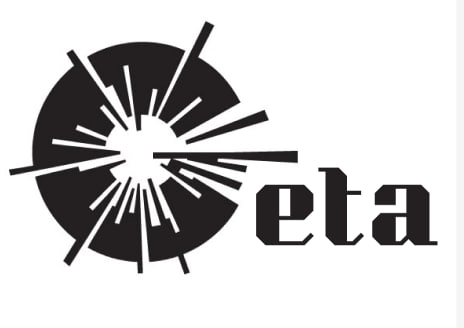

MITEX 2026 · Россия · Стенд 8C1208
ГЕТА, ООО
Карточка проверена 10 ноября 2026, 09:28 · Источник ↗ · Снимок оригинальной карточки ↗
О компании
ГЕТА — специализированный магазин оборудования для газовой сварки и резки: баллоны для технических газов, редукторы и регуляторы, сварочные и газовоздушные горелки, резаки, рукава БЕЛАРУСЬРЕЗИНОТЕХНИКА и сварочная химия.
Контакты
Все контактные сведения из карточки
Контакты 109428, г. Москва, р-н Рязанский р-н, г Москва, Рязанский пр-кт, д . 16, к стр. 4, кв 1/1. помещ Телефон: +79253109941 E-mail: getaweld@bk.ru Адрес: 109428, Россия, 109428, г. Москва, р-н Рязанский р-н, г Москва, Рязанский пр-кт, д . 16, к стр. 4, кв 1/1. помещ Веб-сайт: http://ooogeta.ru E-mail: getaweld@bk.ru Телефон: +79253109941
Все рубрики участника
Mitex - Рубрикатор
- 3. Сварочное оборудование, расходные материалы, СИЗ
Зал
- Зал № 8
Участник выставки
- MITEX
Фотографии и изображения
Видео, каталоги и документы
В доступной карточке нет видео или документов. Смотрите сайт участника.